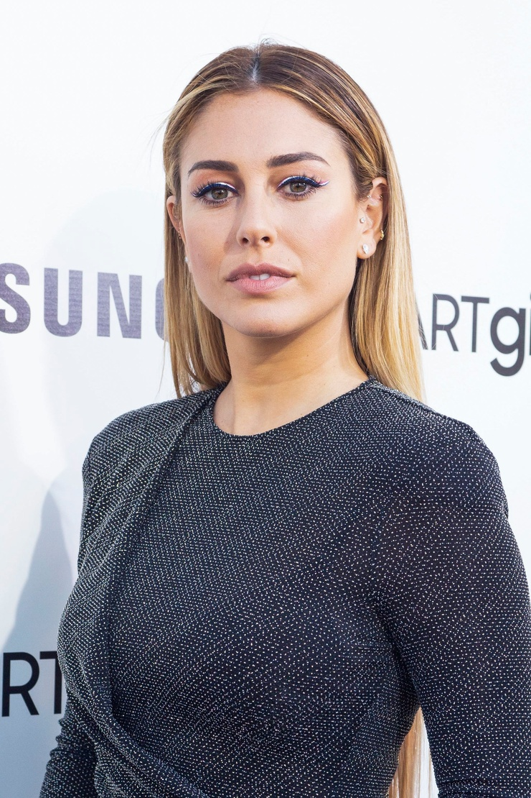
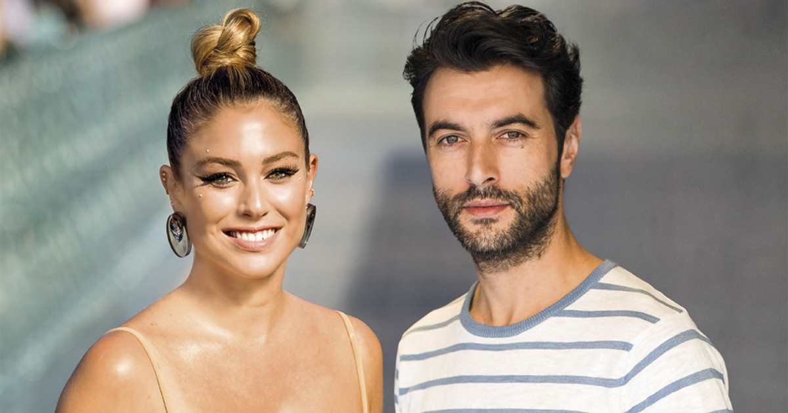

@blanca_suarez
contacto@blancasuarez.com

Más allá de las cámaras y los focos.
Desde 2008 hasta 2010 fue pareja del actor Javier Pereira. En marzo de 2011 empezó una relación con el actor Miguel Ángel Silvestre, al que conoció en el rodaje de The Pelayos. Esta relación terminó en el 2014. Desde enero hasta septiembre de ese mismo año, mantuvo una breve relación con el cantante Dani Martín, con quien trabajó en el videoclip de su sencillo «Emocional».Desde finales de octubre del 2015 hasta finales de enero del 2018, mantuvo una relación sentimental con el actor Joel Bosqued. Tras cuatro años de relación, siendo ésta la segunda más larga que ha mantenido la actriz después de Silvestre, ambos actores finalizaron su relación de manera amistosa. En marzo del 2018 se hace pública su relación sentimental con Mario Casas, actor con el que Blanca mantiene una gran amistad de más de 13 años desde que empezaron a trabajar juntos en Fuga de cerebros, coincidiendo en cinco grabaciones. Tras dar por finalizada la relación de apenas dos años con Mario Casas, a principios del 2020 se dispararon sonados rumores de que había comenzado una relación con su compañero de reparto, Javier Rey, al finalizar los rodajes de la película El verano que vivimos en el 2019. En marzo del 2020, se confirmó la relación de los actores, ya que el actor gallego se trasladó al domicilio de Blanca a pasar el confinamiento por COVID.
Nacida en Madrid en 1988, mi pasión por la comunicación me llevó a cursar estudios de Comunicación Audiovisual en la Universidad Rey Juan Carlos (URJC), una formación que siempre ha complementado mi visión técnica del cine.
A pesar de mi exposición pública, me considero una persona reservada y fiel defensora de la privacidad. Creo firmemente que cada individuo debe tener una parcela de intimidad inviolable. En mis relaciones personales y profesionales, lo que más valoro es la lealtad, la honestidad y la capacidad de saber escuchar de verdad.
Mi conexión con el mundo de la estética va más allá de ser imagen de marca. En **febrero de 2014**, inicié una etapa muy especial como redactora en Vogue España, donde a través de mi blog compartía mi visión sobre la moda, los viajes y la vida cotidiana, permitiéndome explorar mi faceta como comunicadora escrita.
Cuando no estoy en un rodaje, disfruto del diseño, la naturaleza y, sobre todo, de mis animales. Mi perro Pistacho es una pieza fundamental en mi vida diaria.
Participó en un videoclip de la canción emocional del cantante Dani Martín en el año 2014
Emocional, Dani Martín.También hizo varios cortometrajes, como por ejemplo el de universos de José Carbacho y Juan Cruz
CORTOMETRAJE.